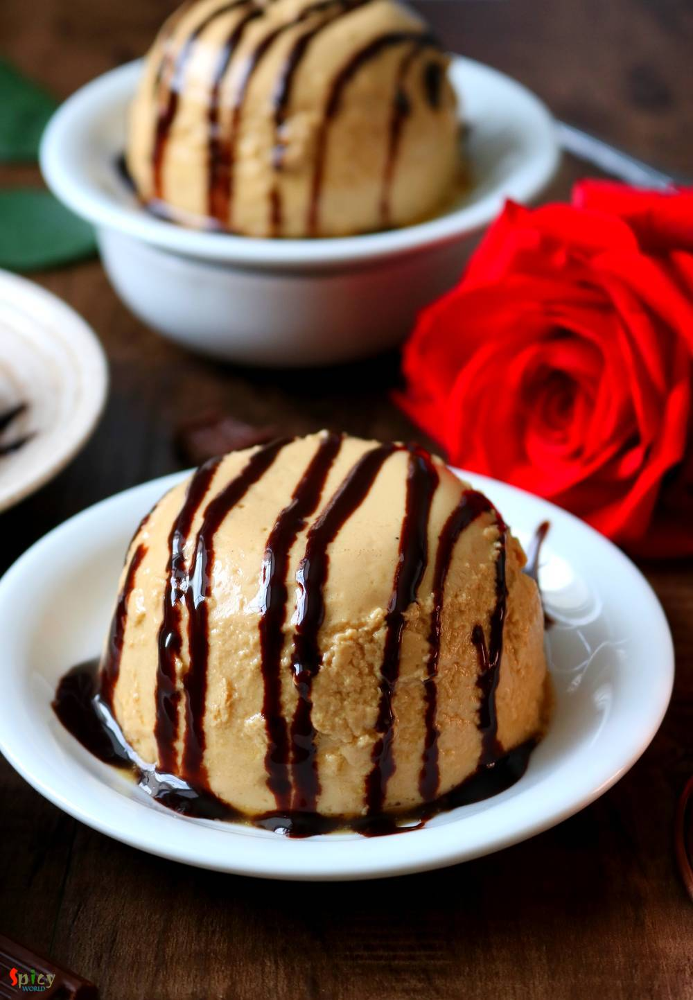
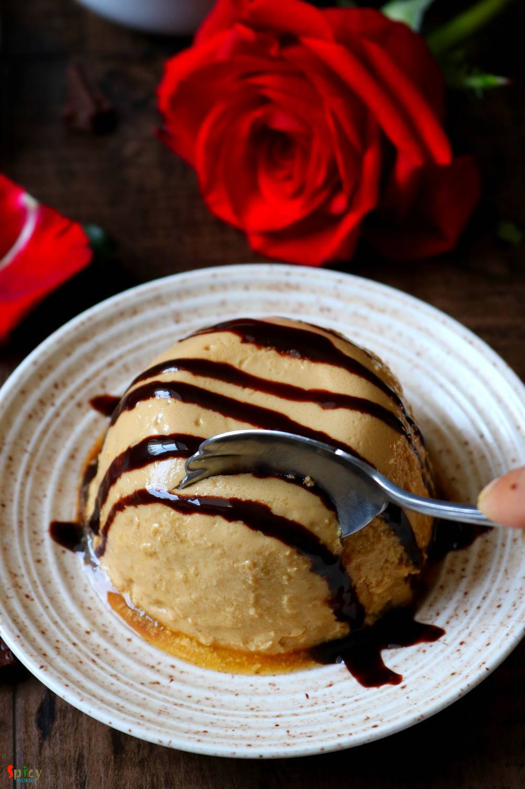

Simple and Easy Recipes
Coffee flavored Bhapa Doi / Steamed Yogurt
© 2016 Spicy World, Published on: May 28, 2019
Bhapa Doi is an old school Bengali dessert recipe. Bhapa means Steamed and Doi means Yogurt. I wanted to do something new with this recipe and that is why for flavor I chose Coffee as Mango, Cardamom, Saffron are very common flavors whenever we think about Indian desserts. In this Bhapa Doi recipe Coffee can be overpowering, it can make the yogurt bitter in taste, so first add little, taste, if you need more then only add another teaspoon. My family calls this yogurt Bengali Cheesecake as it comes out very thick and creamy, I hope you will enjoy it's taste and flavor too.

Ingredients
- 2 cups of thick full fat yogurt.
- 1.5 cups of condensed milk.
- 3 Tablespoons of full fat milk powder.
- 1 Tablespoon of instant coffee powder.
- Half cup of warm water.


Steps
Put the yogurt in a strainer and then put that strainer on a bowl for 3-4 hours.
The bowl will catch the extra water from yogurt.
In a small bowl add 1/4th cup of warm water and milk powder. Mix well and keep aside.
In another bowl add the remaining water and coffee powder. Mix well and keep aside.
In a big mixing bowl, add thick yogurt and condensed milk. Whisk well.
Then add milk powder mixture and 2 Teaspoons of coffee mixture. Again whisk well for 1-2 minutes.
Brush some ghee inside the steel bowls.
Pour the mixture into the bowls. Cover them with tight lid.
Steam for 20-25 minutes on medium flame.
Let them come to room temperature, then keep them in fridge for 3-4 hours.
Your coffee flavored steamed yogurt is ready to serve.
Serve this chilled with Vanilla ice cream ...
")